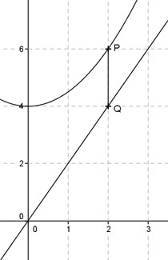

Aufgabe 121 Eine Parallele zur y-Achse schneidet die Parabel y = 0,5x2 + 4 im Punkt P und die Gerade y = 2x in Q. An welcher Stelle x wird die Strecke PQ am kleinsten?  Die Parabel liegt an jeder Stelle x höher als die Gerade. Die Strecke PQ kann man ermitteln, wenn man den Funktionswert der Geraden an einer Stelle x vom Funktionswert der Parabel abzieht. Also: PQ(x) = 0,5x2 + 4 - 2x PQ(x) = 0,5x2 - 2x + 4 Dies ist die Funktionsgleichung einer nach oben geöffneten, gestauchten Parabel, deren tiefster Punkt der Scheitelpunkt ist. PQ(x) = 0,5x2 - 2x + 4 | :0,5 PQ(x) ------ = x2 - 4x + 8 0,5 Quadratische Ergänzung: PQ(x) ------ = x2 - 4x + 4 - 4 + 8 0,5 mit x2 - 4x + 4 = (x - 2)2 PQ(x) ------ = (x - 2)2 + 4 | *0,5 0,5 PQ(x) = 0,5(x - 2)2 + 2 Scheitelpunkt abgelesen: S(2|2) Die Scheitelpunktkoordinaten bedeuten: Geht man an der Stelle x = 2 senkrecht nach oben, entsteht die kleinste, 2 Einheiten lange Strecke PQ.